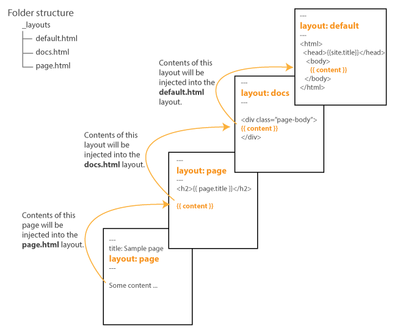

Create your first Jekyll theme
If you’re looking for themes for your Jekyll site, you don’t have to restrict yourself to existing Jekyll themes. It’s pretty easy to convert almost any static HTML site into a Jekyll theme.
In many ways, any site that is currently a static site already is a Jekyll site. Jekyll just allows you to automate parts of the site (like inserting pages into templates, rendering lists for navigation, generating feeds and sitemaps, and more) as it processes the files.
Understanding how to convert any HTML site into a Jekyll website will open your world to many more options for Jekyll themes. Instead of searching online for “Jekyll themes,” you can choose from the large variety of HTML templates for your site, quickly Jekyll-ize the HTML template as you need to, and build the output with Jekyll.
Although websites can have sophisticated features and controls, we’ll keep things simple in this tutorial. This tutorial contains the following sections:
- Understand a basic Jekyll site
- 1. Create a template for your default layout
- 2. Identify the content part of the layout
- 3. Create a couple of files with front matter tags
- 4. Add a configuration file
- 5. Test your pages
- 6. Configure site variables
- 7. Show posts on a page
- 8. Configure navigation
- 9. Simplify your site with includes
- 10. RSS feed
- 11. Add a sitemap
- 12. Add external services
- 13. Conclusion
- Additional resources
Understand a basic Jekyll site
First, let’s start with a grounding in the basics. Stripping a Jekyll site down to an extremely basic level will help clarify what happens in a Jekyll site. If you haven’t already installed the jekyll gem, install it.
A simple Jekyll site might consist of just 3 files:
├── _config.yaml
├── _layouts
│ └── default.html
└── index.md
Manually create these 3 files in a folder called myjekyllsite. (Put default.html inside a folder called _layouts.) Then populate the content of the default.html and index.md files as follows:
_layouts/default.html
<html>
<body>
{{ content }}
</body>
</html>
index.md
---
title: My page
layout: default.html
---
Some **bold** content.
Now cd to myjekyllsite and build the site:
jekyll serve
When you build the site, you get a preview URL such as http://127.0.0.1:4001/. The site’s files are built in the _site folder.
This is a Jekyll site at the most basic level. Here’s what is happening:
- The
_config.ymlfile contains settings that Jekyll uses as it processes your site. An empty config file will use default values for building a Jekyll site. For example, to convert Markdown to HTML, Jekyll will automatically use the kramdown Markdown filter, without any need to specify it. - Jekyll looks for files with front matter tags (the two sets of dashed lines
---like those inindex.md) and processes the files (populating site variables, rendering any Liquid, and converting Markdown to HTML). - Jekyll pushes the content from all pages and posts into the
{{ content }}tags in the layout specified (default) in the front matter tags. - The processed files get written as
.htmlfiles in the_sitedirectory.
You can read more about how Jekyll processes the files in Order of Interpretation.
With this basic foundation of how a Jekyll site works, you can convert almost any HTML theme into a Jekyll site. The following sections will take you through a step-by-step tutorial on converting an HTML template into a Jekyll site.
1. Create a template for your default layout
Find your HTML theme and save it as a default layout. If you’re converting or cloning an existing site, you can right-click the page and view the source code.
For example, suppose you’re cloning your company site to create a documentation site with the same branding. Or suppose you have a personal site that you built with HTML and now want to make it a Jekyll theme. Get the HTML source code for your site.
Note: Regardless of the site, check the license and make sure you have permission to copy the code.
Copy and paste the source code into a file called default.html. Put the default.html file inside a folder called _layouts. This will be the default layout template for your pages and posts — that is, each page or post will use this layout when Jekyll builds the site.
Note that in looking for templates, you want the HTML output of the template. If the template has PHP tags or other dynamic scripts, these dynamic elements will need to be converted to HTML or to Liquid scripting where possible. Jekyll uses Liquid in its templating system to retrieve dynamic content.
Open default.html into your browser locally to ensure the site looks and functions like it does online. You will likely need to adjust CSS, JS, and image paths so they work.
For example, if the paths were relative on the site you copied, you’ll need to either download the same assets into your Jekyll site or use absolute paths to the same assets in the cloud. (Syntax such as src="// requires a prefix such as src="http:// to work in your local browser.)
Jekyll provides some filters to prepend a site URL before path. For example, you could preface your stylesheet like this:
{{ "/assets/style.css" | relative_url }}
The relative_url filter will prepend the baseurl value from your config file to the input. This is useful if your site is hosted at a subpath rather than the root of the domain (for example, http://mysite.com/blog/).
You can also use an absolute_url filter. This filter will prepend the url and baseurl value to the input:
{{ "/assets/style.css" | absolute_url }}
Again, both url and baseurl must be defined in your site’s config file, like this:
url: http://mysite.com
baseurl: /blog
The result in the output will be http://mysite.com/blog/assets/style.css.
Note that the url property of any page begins with a forward slash (/), so omit this at the end of your url or baseurl property.
You don’t have to prepend filters to link paths like this. You could also use relative links across your entire site. However you decide to code the paths to your assets, make sure they render correctly.
Does your local default.html page look good in your browser? Are all images, styles, and other elements showing up correctly? If so, great. Keep going. You’ll use this template as the layout for all your pages and posts.
In the next section, you’ll blank out the content of the layout and replace it with placeholder tags that get populated dynamically with your Jekyll pages.
2. Identify the content part of the layout
In default.html, find where the page content begins (usually at h1 or h2 tags). Replace the title that appears inside these tags with {{ page.title }}.
Remove the page content (but not code from the top nav, sidebar, or footer) and replace the page content with {{ content }}.
Check the layout again in your browser and make sure you didn’t corrupt or alter it up by inadvertently removing a crucial div tag or other element. The only change should be to the title and page content, which are now blanked out or showing the placeholder tag.
3. Create a couple of files with front matter tags
Create a couple of files (index.md and about.md) in your root directory.
In your index.md file, add some front matter tags containing a title and layout property, like this:
---
title: Home
layout: default
---
Some page content here...
Create another page for testing called about.md with similar front matter tags.
Note: If you don’t specify a layout in your pages, Jekyll will automatically use the template labeled default. We specify it here only to make it explicit what’s happening.
4. Add a configuration file
Add a _config.yml file in your root directory. In _config.yml, you can optionally specify the markdown filter you want. By default, kramdown) is used (without the need to specify it). If no other filter is specified, your config file will automatically apply the following as a default setting:
markdown: kramdown
You can also specify some options for kramdown to make it behave more like Github-flavored Markdown:
kramdown:
input: GFM
auto_ids: true
hard_wrap: false
syntax_highlighter: rouge
5. Test your pages
Now run jekyll serve and toggle between your index.html and about.html pages. The default layout should load for both pages.
You’ve now extracted your content out into separate files and defined a common layout for pages.
You could define any number of layouts you want for pages. Then just identify the layout you want that particular page to use. For example:
---
title: Sample page
layout: homepage
---
This page would then use the homepage.html template in the _layouts folder.
You can even set default front matter tags for pages, posts, or collections in your _config.yml file so that you don’t have to specify the layout in your front matter tags. However, setting defaults is more advanced than this basic tutorial will cover.
6. Configure site variables
You already configured the page title using {{ page.title }} tags. But there are more title tags to populate. Pages also have a title tag that appears in the browser tab or window. Typically you put the page title followed by the site title here.
In your default.html layout, look for the title tags below your head tags:
<title>ACME Website</title>
Insert the following site variables:
<title>{{ page.title }} | {{ site.title }}</title>
Open _config.yml and add a title property for your site’s name.
title: ACME Website
Any properties you add in your _config.yml file are accessible through the site namespace. Similarly, any properties in your page’s front matter are accessible through the page namespace. Use dot notation after site or page to access the value.
Stop your Jekyll server (Ctrl + C) and restart it. Verify that the title tags are populating correctly.
Note: Every time you modify your config file, you have to restart Jekyll for the changes to take effect. When you modify other files, Jekyll automatically picks up the changes when it rebuilds.
If you have other variables to populate in your site, do so following this same pattern.
7. Show posts on a page
It’s common to show a list of posts on the homepage. First, let’s create some posts so that our loop will have something to display.
Add some posts in a _posts folder following the standard YYYY-MM-DD-title.md post format:
2017-01-02-my-first-post.md2017-01-15-my-second-post.md2017-02-08-my-third-post.md
In each post, add some basic content:
---
title: My First Post
layout: default
---
Some sample content...
Now let’s create a layout that will display the posts. Create a new file in _layouts called home.html. In your home.html layout, add the following logic:
---
layout: default
---
<ul class="myposts">
{% for post in site.posts %}
<li><a href="{{ post.url }}">{{ post.title}}</a>
<span class="postDate">{{ post.date | date: "%b %-d, %Y" }}</span>
</li>
{% endfor %}
</ul>
Create a file called blog.md in your root directory and specify the home layout:
---
title: Blog
layout: home
---
In this case, home.md will be pushed into the {{ content }} tags in the home layout. Then the home layout will be pushed into the {{ content }} tags of the default layout.
How layouts work
When a layout specifies another layout, it means the content of the first layout will be stuffed into the {{ content }} tag of the second layout. As an analogy, think of Russian dolls that fit into each other. Each layout fits into another layout that it specifies.
The following diagram shows how layouts work in Jekyll:

In this case, the content from a page that specifies the layout page gets pushed into the {{ content }} tag of the layout file named page. Because the page layout itself specifies another layout (docs), the content from page gets pushed into the {{ content }} tag in the docs layout. Because the docs layout specifies another layout (default), the content from docs gets pushed into the {{ content }} tag of the default layout.
You don’t need multiple layouts. You could just use one: default. You have options for how you design your site. In general, it’s common to define one layout for pages and another layout for posts, but for both of these layouts to inherit the default template (which usually defines the top and bottom parts of the site).
In your browser, go to home.html and see the list of posts. (Note that you didn’t have to use the method described here. You could have simply added the for loop to any page, such as index.md, to display these posts. But given that you may have more complex logic for other features, it can be helpful to store your logic in templates separate from the page area where you frequently type your content.)
For loops
By the way, let’s pause here to look at the for loop logic a little more closely. For loops in Liquid are one of the most commonly used Liquid tags. For loops let you iterate through content in your Jekyll site and build out a result. The for loop also has certain properties available (like first or last iteration) based on the loop’s position in the loop as well.
We’ve only scratched the surface of what you can do with for loops in retrieving posts. For example, if you wanted to display posts from a specific category, you could do so by adding a categories property to your post’s front matter and then look in those categories. Further, you could limit the number of results by adding a limit property. Here’s an example:
<ul class="myposts">
{% for post in site.categories.podcasts limit:3 %}
<li><a href="{{ post.url }}">{{ post.title}}</a>
<span class="postDate">{{ post.date | date: "%b %-d, %Y" }}</span>
</li>
{% endfor %}
This loop would get the latest 3 posts that have a category called podcasts in the front matter.
8. Configure navigation
Now that you’ve configured posts, let’s configure page navigation. Most websites have some navigation either in the sidebar or header area.
In this tutorial, we’ll assume you’ve got a simple list of pages you want to generate. If you only have a handful of pages, you could list them by using a for loop to iterate through the site.pages object and then order them by a front matter property.
Identify the part of your code where the list of pages appears. Usually this is a <ul> element with various child <li> elements. Replace the code with the following:
<ul>
{% assign mypages = site.pages | sort: "order" %}
{% for page in mypages %}
<li><a href="{{ page.url | absolute_url }}">{{ page.title }}</a></li>
{% endfor %}
</ul>
This example assumes each page would have front matter containing both a title and order property like this:
---
title: My page
order: 2
---
Here the order property will define how the pages get sorted, with 1 appearing first in the list.
You could also iterate through a list of pages that you maintain in a separate data file. This might be more appropriate if you have a lot of pages, or you have other properties about the pages you want to store.
To manage page links this way, create a folder in your Jekyll project called _data. In this folder, create a file called sidebar_links.yml with this content:
- title: Sample page 1
url: /sample1/
- title: Sample page 2
url: /sample2/
- title: Sample page 3
url: /sample3/
(You can store additional properties for each item in this data file as desired. Arrange the list items in the order you want them to appear.
To print the list of pages from the data file, use code like this:
<ul>
{% for p in site.data.sidebar_links %}
<li><a href="{{ p.url }}">{{ p.title }}</a></li>
{% endfor %}
</ul>
If you have more sophisticated requirements around navigation, such as when building a documentation site, see the detailed tutorial on navigation.
9. Simplify your site with includes
Let’s suppose your default.html file is massive and hard to work with. You can break up your layout by putting some of the content in include files.
Add a folder called _includes in your root directory. In that folder, add a file there called sidebar.html.
Remove your sidebar code from your default.html layout and insert it into the sidebar.html file.
In place of sidebar code in default.html, pull in your include like this:
{% include sidebar.html %}
You can break up other elements of your theme like this, such as your header or footer. Then you can apply these common elements to other layout files. This way you won’t have duplicate code.
10. RSS feed
Your Jekyll site needs an RSS feed. Here’s the basic RSS feed syntax. To create an RSS file in Jekyll, create a file called feed.xml in your root directory and add the following:
---
layout: null
---
<?xml version="1.0" encoding="UTF-8" ?>
<rss version="2.0">
<channel>
<title>{{ site.title }}</title>
<link>{{ site.url }}</link>
<description>{{ site.description }}</description>
<lastBuildDate>{{ site.time | date_to_rfc822 }}</lastBuildDate>
{% for post in site.posts %}
<item>
<description>
{{ post.content | escape | truncate: '400' }}
</description>
<pubDate>{{ post.date | date_to_rfc822 }}</pubDate>
<guid>
{{ post.url | prepend: site.url }}
</guid>
</item>
{% endfor %}
</channel>
</rss>
Make sure your _config.yml file has properties for title, url, and description.
This code uses a for loop to look through your last 20 posts. The content from the posts gets escaped and truncated to the last 400 characters using Liquid filters.
In your default.html layout, look for a reference to the RSS or Atom feed in your header, and replace it with a reference to the file you just created. For example:
<link rel="alternate" type="application/rss+xml" href="{{ site.url }}/feed.xml" title="{{ site.title }}">
You can also auto-generate your feed by adding a gem called jekyll-feed. This gem will also work on GitHub Pages.
11. Add a sitemap
Finally, add a site map. Create a sitemap.xml file in your root directory and add this code:
---
layout: null
search: exclude
---
<?xml version="1.0" encoding="UTF-8"?>
<urlset xmlns="http://www.sitemaps.org/schemas/sitemap/0.9">
{% for page in site.pages %}
<url>
<loc>{{page.url}}</loc>
<lastmod>{{site.time | date: '%Y-%B-%d' }}</lastmod>
<changefreq>daily</changefreq>
<priority>0.5</priority>
</url>
{% endfor %}
{% for post in site.posts %}
<url>
<loc>{{post.url}}</loc>
<lastmod>{{site.time | date: '%Y-%B-%d' }}</lastmod>
<changefreq>daily</changefreq>
<priority>0.5</priority>
</url>
{% endfor %}
</urlset>
Again, we’re using a for loop here to iterate through all posts and pages to add them to the sitemap.
You can also auto-generate your sitemap by adding a gem called jekyll-sitemap. This gem will also work on GitHub Pages.
12. Add external services
For other services you might need (such as contact forms, search, comments, and more), look for third-party services. For example, you might use the following:
- For comments: Disqus
- For a newsletter: Tinyletter
- For contact forms: Wufoo
- For search: Algolia Docsearch
For more details on services for static sites, see the Third Parties list and tutorials from CloudCannon.
Your Jekyll pages consist of HTML, CSS, and JavaScript, so pretty much any code you need to embed will work without a problem.
As you integrate code for these services, not that if a page in your Jekyll site doesn’t have front matter tags, Jekyll won’t process any of the content. The page will just be passed to the _site folder when you build your site.
If you do want Jekyll to process some page content (for example, to populate a variable that you define in your site’s config file), just add front matter tags to the page. If you don’t want any layout applied to the page, specify layout: null like this:
---
layout: null
---
13. Conclusion
Although websites can implement more sophisticated features and functionality, we’ve covered the basics in this tutorial. You now have a fully functional Jekyll site.
To deploy your site, consider using Github Pages, Amazon AWS S3 using the s3_website plugin, or just FTP your files to your web server.
You can also take your Jekyll theme to the next level by packaging it as a Ruby gem.
Additional resources
Here are some additional tutorials on creating Jekyll sites:
- Convert a static site to Jekyll
- Building a Jekyll Site – Part 1 of 3: Converting a Static Website To Jekyll